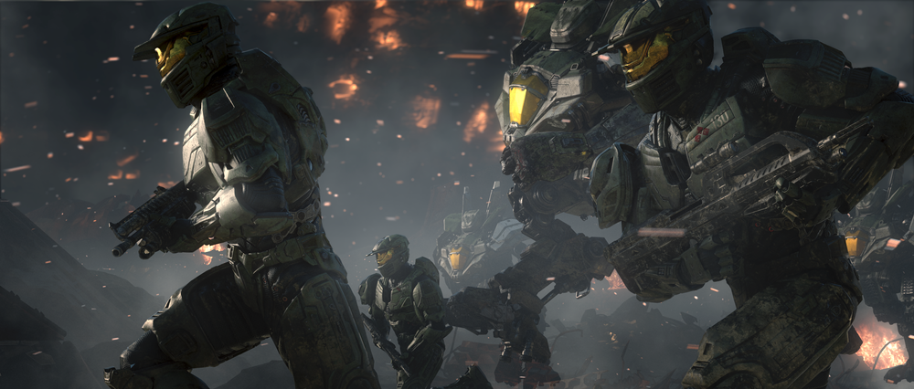

2517년부터 ONI 제3과 소속 캐서린 엘리자베스 핼시 박사의 주도하에 이루어진 두 번째 스파르탄 프로젝트.
지난 프로젝트의 실패를 곱씹어 우선 5~7살 가량의 '적합한' 어린 후보생 150명을 뽑았지만, 예산 문제로 그의 절반인 75명만 최종적으로 선택해 UNSC에 의해 비밀리에 계획적으로 납치되었다. 납치된 아이들 대신 그 클론을 각 가정으로 보내 부모들을 속였으나, 클론은 수명이 짧아 얼마 안 가 숨졌다. 하지만 클론은 UNSC 기술자들이 생각했던 것보다 오래 살았는데, 핼시 박사는 부모의 간호가 이러한 뜻밖의 결과를 가져왔다고 흥미로워한다.